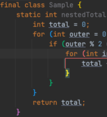
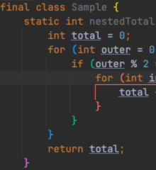
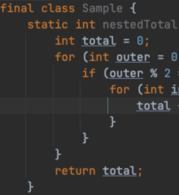
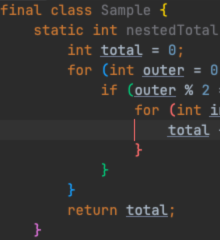
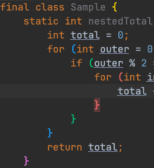
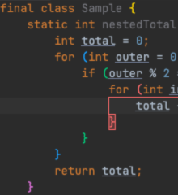
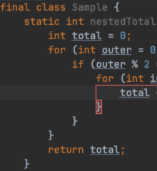
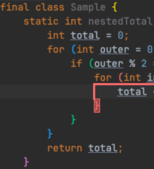
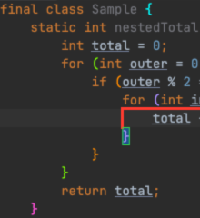

기본 강조 켜짐 · 플러그인 통합 꺼짐
기준 불일치native-visuals-unmanaged
{kind=link}

이전 실행 보관본입니다. 공통 QA 초기화와 전면 창 검사를 추가하기 전 캡처이며, 최신 코드의 통과 증거가 아닙니다. 최신 재검증 결과를 확인하세요.
11개 캡처 완료 · 정확 비교 4개 통과 / 7개 불일치
7개 불일치는 캡처 최상단 경계에 한정됩니다. 그 아래 본문·가이드·괄호 픽셀은 기준과 일치합니다. 경계 차이의 발생 원인은 확정하지 않았습니다.
Settings 선택·체크박스 변경·Apply가 끝까지 실행됐습니다. 커서를 움직이지 않은 상태에서 기본 강조가 복원되는 검증, 플러그인 비활성화 후 재활성화 검증도 통과했습니다.
시각 테스트 규칙에 따라 기준 이미지와 정확 비교 방식은 변경하지 않았습니다. 전체 시각 테스트 상태는 실패입니다. 일반 테스트와 플러그인 구조 검사는 통과했습니다.
native-visuals-unmanaged

native-highlight-suppressed

plugin-disabled

horizontal-only
vertical-only

pair-border-only
pair-background-only

all-components

bracket-colorization-off

default-palette

custom-palette

수동 QA의 시작 상태는 기본 Matched brace / Current scope / Show indent guides 켜짐, 플러그인 켜짐, 통합 꺼짐입니다. 이 보관본은 현재 샌드박스가 실행 중임을 뜻하지 않습니다. Sample.java의 6:62에서 확인합니다. 플러그인 설정 위치는 Settings → Editor → Bracket Pair Guides입니다.
6:62 이동 → IntelliJ may emphasize an adjacent guide. Review settings는 설정 페이지만 열고 값을 바꾸지 않음. 커서 이동·파일 재열기로 같은 경고가 반복되지 않음.기본 억제 모드는 Matched brace를 끄는 것으로 두 강조를 억제하므로 Current scope 체크가 남아 있어도 정상입니다. 앞 단계에서 경고를 이미 소비했다면 Vertical을 끄고 Apply, 다시 켜고 Apply 하여 새 충돌로 확인합니다.
재실행: 화면 잠금을 해제한 뒤 저장소 루트에서 ./gradlew :plugin:runManualQa. 명령을 실행할 때마다 새 세션을 만듭니다. 현재 수동 QA 안내를 따르세요.
{kind=link}
{kind=link}
{kind=link}
{kind=link}
{kind=link}
{kind=link}
{kind=link}
{kind=link}
{kind=link}
{kind=link}
{kind=link}
{kind=link}
{kind=link}
{kind=link}
{kind=link}
{kind=link}
{kind=link}